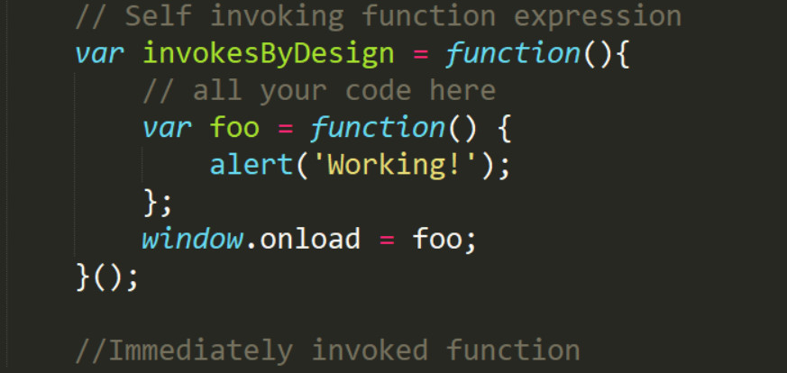
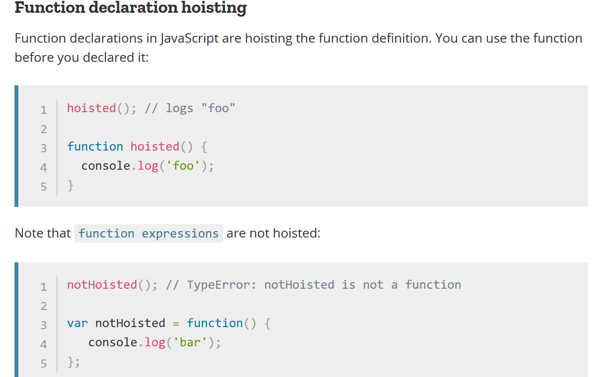
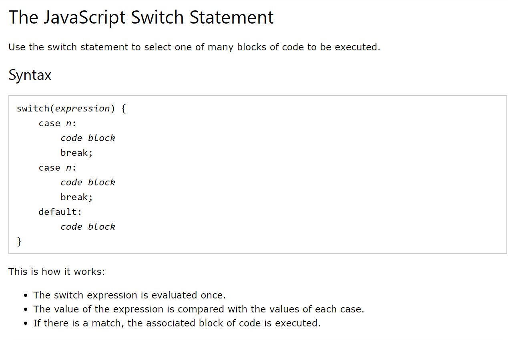

Self Invoking Function Expression
Variables / Functions / Public / Private

Code Review
Functions within functions & Scope
// Self invoking function expression
var aFunction = function(){
var private = 'a string';
// We can console.log(a);
// It is in the local scope of this function
}
// Var a is not accessible to this log.
// Var a is private and not in the global
// scope. var a is within aFunction
console.log(a);
function bFunction(){
// This function tries to return
// var a. But var a is private and within
// aFunction. So NOT available/visible to this
// function.
return a;
}
//invoke bFunction
console.log(bFunction());
//Immediately invoked function
Hoisting
In relation to invoking functions & variables

Decisions- Switch Statement
